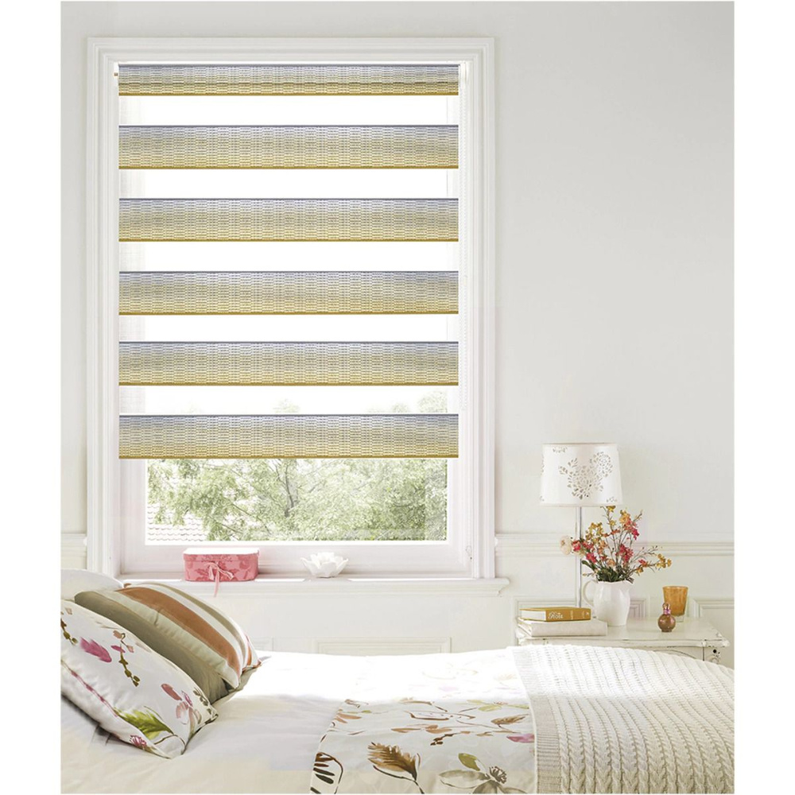

Рольшторы День-Ночь
Главная | День-ночь | Блэкаут | С фотопечатью | Плиссе | Жалюзи | Римские шторы | Шторы | Карнизы
В современном интерьере важную роль играет не только дизайн, но и функциональность оконных покрытий. Одним из популярных и практичных вариантов являются рольшторы День-Ночь. Эти шторы представляют собой уникальное сочетание эстетики и удобства, позволяя регулировать уровень освещения в помещении с максимальной точностью.
Особенности конструкции рольштор День-Ночь
Главная особенность рольштор День-Ночь заключается в их конструкции, которая состоит из чередующихся горизонтальных полос из плотной и прозрачной ткани. Такая комбинация позволяет легко управлять световым потоком: при совпадении прозрачных полос свет свободно проникает в комнату, а при смещении плотных полос – создается эффект затемнения. Благодаря этому можно добиться как полного уединения, так и мягкого рассеянного света.

Преимущества использования
Рольшторы День-Ночь отличаются простотой в эксплуатации и долговечностью. Они легко монтируются на окна любого типа и не требуют сложного ухода. Кроме того, благодаря разнообразию цветовых решений и текстур, эти шторы гармонично вписываются в любой интерьер – от классики до минимализма. Еще одним важным преимуществом является возможность точной настройки освещения без необходимости полностью поднимать или опускать штору.
Применение в различных помещениях
Такие рольшторы отлично подходят для жилых комнат, офисов, детских комнат и даже кухонь. В спальне они обеспечивают комфортный сон, блокируя лишний свет, а в гостиной создают уютную атмосферу. В офисных помещениях День-Ночь помогают снизить блики на экранах компьютеров, улучшая рабочий процесс.